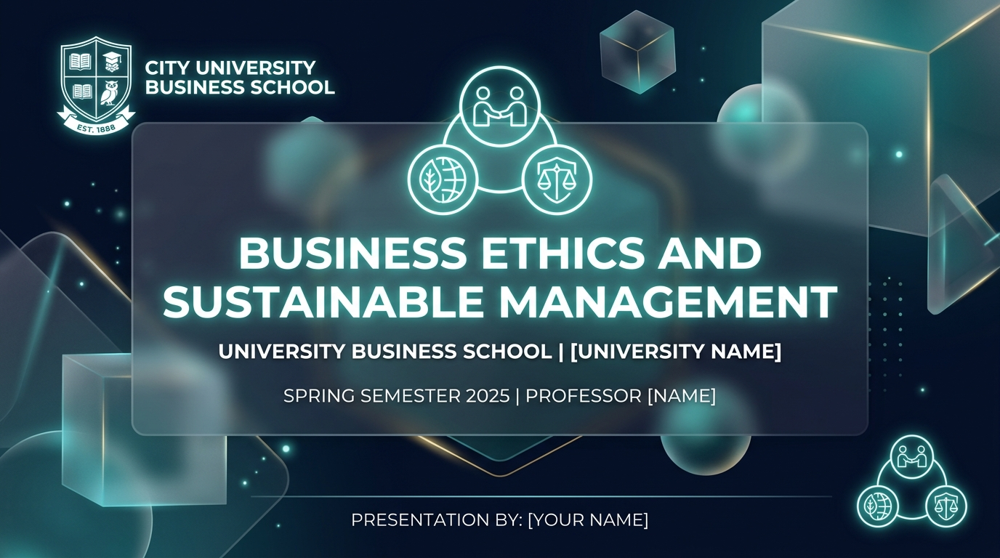

永續創新、ESG策略與商業模式轉型 Sustainability Innovation & ESG Strategy
Sustainability Innovation, ESG Strategy and Business Model Transformation Sustainability Innovation, ESG Strategy and Business Model Transformation
從合規走向策略、Triple Bottom Line、VRIO 分析矩陣、BSC x ESG 與 2035 Roadmap Shifting Compliance to Strategy, Triple Bottom Line, VRIO Framework, BSC x ESG & 2035 Roadmap

課程邏輯主線：昇華至企業核心競爭策略與獲利轉型 Course Journey: Elevating to Corporate Strategy & Profitability
W1-3 Ethics/CSR
倫理基因Ethics & CSR
W4-8 ESG/Report
永續揭露ESG Reporting
W9-11 Fin/Chain/AI
金融供應鏈AIFin/Chain/AI
W12 Today
ESG Strategy
(永續創新與ESG策略)ESG Strategy
(Competitive Advantage)
暖身問題：ESG 到底是蠶食利潤的成本，還是獲利的策略投資？ Warm-up: Is ESG a Pure Cost or a Profit-Generating Strategy?
「被動的消極合規 (Compliance) 是沉沒成本；但主動的商業模式創新 (Business Model Innovation) 能創造全新的溢價市場與壁壘！ESG 必須從『開銷』升級為『企業策略』！」 "Passive compliance is a sunk cost, but active business model innovation generates premium markets!"
Michael Porter 競爭優勢與 CSV 共享價值 Michael Porter's CSV & Competitive Advantage
將社會與環境需求融入企業核心策略Integrating Social Needs into Core Strategy
Porter 指出：企業透過重新定義產品與市場、重塑價值鏈生產力與建立在地產業聚落，能在解決社會問題的同時創造龐大經濟價值。 Creating Shared Value (CSV) builds economic success by addressing societal and environmental challenges.
從 ESG Compliance (合規) 走向 ESG Strategy (策略) Shifting from ESG Compliance to ESG Strategy
Passive Compliance (被動合規)
• 視 ESG 為法規與開罰公關防守。
• 僅滿足最低揭露標準，被動支出。
• 增加成本，侵蝕短期利潤。Viewing ESG as a pure defensive cost to avoid penalties.
Active Strategy (主動策略)
• 視 ESG 為商業模式創新的新賽道。
• 打造綠色產品溢價與高防禦護城河。
• 降低資本成本並獲取頂尖人才。Viewing ESG as a engine for innovation, premium pricing, and moat.
什麼是 Sustainability Innovation (永續創新)？ What is Sustainability Innovation?
產品、製程與商業模式的綠色突破Green Breakthroughs in Products, Processes & Models
永續創新是指企業在產品研發、生產製造流程與商業交付模式中導入環境與社會效益，創造全新的顧客價值與市場類別。 Integrating environmental and social goals into products, services, and operations to create value.
Business Model Innovation (BMI 商業模式創新) Business Model Innovation (BMI)
重構價值主張、收益機制與成本結構Reinventing Value Proposition & Revenue Streams
不僅是改進產品規格，而是徹底翻轉企業如何獲取顧客、如何收費以及如何利用循環資源交付價值的整體邏輯！ Fundamental changes to how a company delivers value to customers and captures revenue.
Triple Bottom Line (三重底線：People, Planet, Profit) Triple Bottom Line Framework
People (社會)
促進員工福利、DEI 與社區共榮。Fair labor, DEI & community impact.
Planet (環境)
極致減碳、零廢棄與保護生物多樣性。Net zero, zero waste & eco-protection.
Profit (利潤)
維持企業財務自性與長線競爭力。Economic viability & sustainable growth.
Circular Business Models (閉環經濟模式) Closed-Loop Circular Business Models
廢棄物再加值：化成本為全新原料收入Turning Waste into High-Value Raw Input
建立產品回收重製系統，將原本需支付處置費的廢棄物，轉化為高價值的再生原料，大幅降低原生資源採購成本。 Transforming disposal cost burdens into high-value recycled input materials.
Sharing Economy (共享經濟與資產效率) Sharing Economy & Resource Efficiency
提高閒置資產利用率，減少資本開支Maximizing Utilization of Idle Assets
透過平台化媒合閒置物流、設備或空間，減少總體資源浪費，同時以極低資本開支 (CapEx) 創造全新收益點。 Unlocking revenue from underutilized assets via platform sharing models.
Product-as-a-Service (PaaS 產品即服務) Product-as-a-Service (PaaS) Model
從買斷硬體轉為訂閱服務（賣照明不賣燈泡）Shifting Ownership to Circular Subscriptions
例如 Philips 推出 Pay-per-Lux，只向企業收取照明服務費用，燈具所有權留存 Philips，強烈誘使製造商研發 10 年不壞的超耐久燈具。 Philips Pay-per-Lux sells light services instead of bulbs, incentivizing maximum product durability.
Patagonia 永續品牌與目的導向獲利 Patagonia Purpose-Driven Growth
「Earth is Now Our Only Shareholder」使命Earth is Now Our Only Shareholder
Patagonia 創辦人將 100% 企業無表決權股票捐予環保信託，Worn Wear 計畫創造極高忠誠度，證明目的導向品牌能帶來強大溢價！ Donating 100% of profits to climate causes fostered unbreakable consumer brand loyalty and pricing power.
Tesla 永續能源生態系商業模式 Tesla Sustainable Energy Ecosystem
電動車 + 太陽能 + 儲能 + 碳權販售生態系EV + Solar + Powerwall + Carbon Credits
Tesla 透過電動車、Powerwall 儲能與超充網絡重塑能源產業，並透過販售碳權 (Regulatory Credits) 獲取數十億美元純利潤！ Tesla monetized sustainability by selling billions in regulatory carbon credits while building a clean energy ecosystem.
Business Model Innovation Workshop Business Model Innovation Workshop
任務：為目標企業運用 Business Model Canvas 導入 ESG 創新Redesign Canvas with ESG Value Propositions
1. Starbucks (循環燕麥奶/押金杯系統)
2. Apple (舊機回收訂閱/模組拆解)
3. IKEA (家具租賃 PaaS / 買回拍賣)
4. Netflix / TSMC / 全聯 (低碳節能/無塑)
優良的 ESG 創新必須能提升顧客 WTP Activity 1: ESG Innovation Boosts WTP
教師觀點帶出 (Key Takeaway)：Faculty Debrief:
「真正的永續商業模式創新，必須能提升顧客願意支付的價格 (Willingness to Pay) 或精簡運營成本，形成商業自性！」 "True sustainable business model innovation boosts Willingness to Pay or cuts op-costs."
ESG 不是慈善，而是企業核心策略 ESG IS Corporate Core Strategy
貫穿研發、採購、品牌與資本配置的總體戰Embedded Across R&D, Sourcing & Capital Allocation
ESG 不是公關部門的文宣，而是 CEO 親自督導、貫穿公司 5 年與 10 年期營運策略的總體戰線！ ESG is not a PR photo-op; it is a top-level strategy overseen directly by the CEO and board.
ESG 策略制定 4 大步驟 4 Steps for ESG Strategy Formulation
Materiality
雙重重大性議題矩陣鑑定Double materiality matrix
KPI Setting
設定遠大定量 ESG KPISetting ambitious ESG KPIs
Incentives
高階主管薪酬激勵綁定Executive comp alignment
BSC Integration
融入平衡計分卡執行Balanced Scorecard execution
ESG KPI 與高階主管薪酬掛鉤 Linking ESG KPIs to Executive Pay
將 15%–30% 變動年終與減碳 KPI 綁定Tying 15-30% Bonus to Climate & DEI Metrics
Apple, Shell, Unilever 等巨擘，將 CEO 與副總級主管 20% 以上的獎金直接與 Scope 1-3 減碳進度及 DEI 指標達成率掛鉤，驅動真實執行！ Tying executive bonuses directly to decarbonization targets ensures genuine top-down execution.
Balanced Scorecard (BSC 平衡計分卡) × ESG 整合 Integrating ESG into Balanced Scorecard
1. Financial (財務)
資本成本 (WACC) 降低、綠色營收占比。Lower WACC & green revenue %
2. Customer (顧客)
永續品牌忠誠度、WTP 溢價認同。Brand loyalty & WTP premium
3. Internal Process (流程)
Scope 1-3 減碳效率、零廢棄與 ISO 認證。Decarbonization & zero waste
4. Learning (學習成長)
DEI 多元文化、員工永續倫理培訓。DEI culture & ESG training
2035 企業永續策略藍圖制定 Formulating 2035 Sustainability Roadmap
設定 10 年期遠大階段性 MilestoneSetting Ambitious 10-Year Strategic Milestones
分階段規劃 2026 (基期盤查)、2030 (減碳 50% / RE100 達標) 與 2035 (商業模式全循環轉型) 之具體資本投資預算。 Staging clear milestones for 2026, 2030 (RE100), and 2035 complete circular transformation.
Unilever Sustainable Living Plan (USLP) Unilever Sustainable Living Plan
永續品牌成長速度比一般品牌快 69%！Sustainable Brands Grew 69% Faster Than Rest
Unilever 將永續目標整合至 400+ 品牌，實證顯示其「永續生活品牌 (Sustainable Living Brands)」貢獻公司高達 75% 的營業額成長！ Unilever proved that purpose-led sustainable brands delivered 75% of total company growth.
Ørsted 從黑石化轉型全球風電龍頭 Ørsted Black-to-Green Transformation
10 年內將黑能佔比翻轉為 90%+ 綠能Flipping 85% Black Energy to 90%+ Clean Wind
Ørsted (前身丹麥石油天然氣 DONG Energy) 成功賣掉油氣資產、全力賭注離岸風電，市值暴增 10 倍，成為商學院最經典的商業模式轉型範例！ Divesting fossil fuels to focus 100% on offshore wind multiplied Ørsted's valuation tenfold.
商業模式轉型與 Kotter 變革管理 Transformation & Kotter 8-Step Change
運用 Kotter 8 步驟 overcoming 組織轉型阻力Overcoming Resistance via Kotter's 8 Steps
轉型失敗多因內部文化阻力。領導者必須創造緊迫感、建立引導團隊、溝通永續願景、授權行動並創造短期勝績 (Short-term Wins)。 Using Kotter's change leadership model to break internal legacy inertia and align culture.
VRIO 矩陣評估永續競爭優勢 (VRIO Framework) VRIO Framework for Sustainable Competitive Advantage
Value (價值)
該 ESG 技能能否顯著降低成本或避險？Does it cut costs or mitigate risk?
Rarity (稀有)
市場競爭同業是否普遍缺乏該永續技術？Do competitors lack this green tech?
Inimitability (難模仿)
是否具備天價專利壁壘與永續品牌護城河？Is it costly for rivals to copy?
Organization (組織)
企業結構與文化能否充分發揮該優勢？Is firm organized to exploit it?
企業永續轉型的 4 大成功關鍵因素 4 Critical Success Factors for ESG Shift
CEO 承諾、跨部門協同、數位數據與文化重塑CEO Commitment, Digital Data & Culture
1. 最高階層 CEO 親自承諾；2. 打破部門藩籬跨界協同；3. 數據驅動之數位碳盤查系統；4. 融入全體同仁之永續文化。 Top-down board commitment combined with cross-functional digital data infrastructure.
ESG Strategy Design (顧問實戰) ESG Strategy Design Workshop
任務：擔任策略顧問，制定 2035 ESG Strategy RoadmapFormulate 2035 Strategy Roadmap
1. Target: Apple / Nike (供應鏈/閉環鞋材)
2. Target: TSMC / Delta (綠電與低碳創新)
3. Target: IKEA / Starbucks (循環租賃/減塑)
4. Target: Tesla (儲能生態系與碳權策略)
各組 5 分鐘 2035 Roadmap Pitch 5-Min 2035 Roadmap Pitches
教師點評：VRIO 護城河與財務可行性VRIO Moat & Financial Feasibility
點評重點：確認提出的 2035 策略是否具備 VRIO 不可模仿性，且能帶來明確的長線財務效益與 SDGs 貢獻。 Evaluating whether the roadmap establishes VRIO inimitability and solid financial return.
Week 12 核心重點總結 Week 12 Key Takeaways
Compliance → Strategy1. Shift to Strategy
擺脫被動合規成本，將 ESG 作為商業獲利驅動力。Moving from cost compliance to strategic growth.
PaaS & 商業模式創新2. PaaS & BMI
透過三重底線 (TBL) 與 PaaS 訂閱制翻轉價值主張。Reinventing propositions via TBL & PaaS subscriptions.
BSC x ESG & 激勵綁定3. BSC & Pay Alignment
將減碳與 ESG KPI 融入平衡計分卡與高管薪酬。Embedding ESG KPIs into BSC & executive comp.
VRIO 永續護城河4. VRIO Competitive Moat
打造具備稀有性與難模仿性的永續競爭優勢。Building rare and inimitable sustainable moats.
W13 預告：台灣與國際企業案例 W13 Preview: Taiwan & Global Cases
W13 預告：台灣與國際企業永續標竿案例分析W13 Preview: Corporate Benchmark Case Audits
下一週我們將深入剖析台積電、台達電、玉山金、國泰金與國際標竿企業的實戰永續轉型案例！Next week we analyze real-world case audits of TSMC, Delta, E.SUN, and global peers!
階段二總結與 Homework 12 Phase 2 Summary & Homework 12
Homework 12：ESG 策略分析報告 (約 2,000 字)Homework 12: ESG Strategy Report (~2,000w)
選擇一家企業：分析現行 ESG 策略、商業模式轉型深度、運用 SWOT/VRIO 評估競爭優勢並提出 3 項策略建議。 Audit a firm: ESG strategy, business model transformation, SWOT/VRIO competitive advantage & 3 recommendations.